| use | keyboard_arrow_left keyboard_arrow_right | keys or swipe to navigate |
ESC to overview
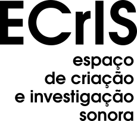
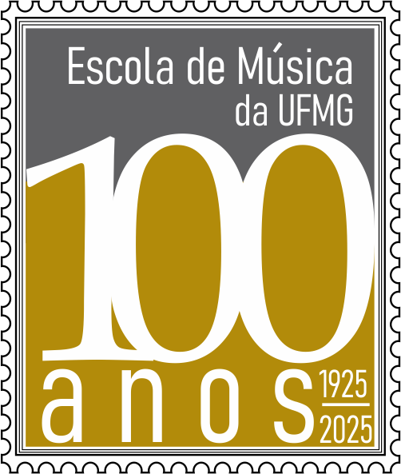


outline
part 1: context, background, activities, research interests [1]
- who I am / where I come from
- how this shaped my perspective towards music/arts/education/research/technology
- research interests/activities
- my work...
[overview]
part 2: after the break [2]
in two acts...
- practical activity
[followed by discussion] - nós, passarinho (2023 - ...) - strategies, tools, ideas
who am I / where come I from [1/a]
boomerang trajectory
education
- UFMG, Federal University of Minas Gerais [2002-06] - undergrad. Music/Composition
- UNICAMP, State University of Campinas - Master [2007-08] / Doctor [2009-13] in Music/Creative Processes
teach/research
- João Pessoa/PB - UFPB, Federal University of Paraíba [2012-16]
- Campinas/SP - UNICAMP, State University of Campinas [2016-17]
still teach in graduation program - Belo Horizonte/MG - UFMG, Federal University of Minas Gerais [since 2018] -
undergraduate/graduate programs
João Pessoa (PB)
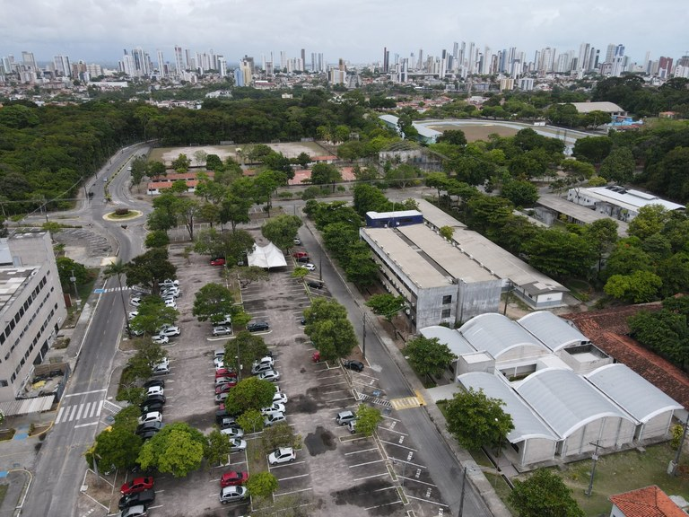
UFPB (Campus João Pessoa)
UFPB (Campus João Pessoa)
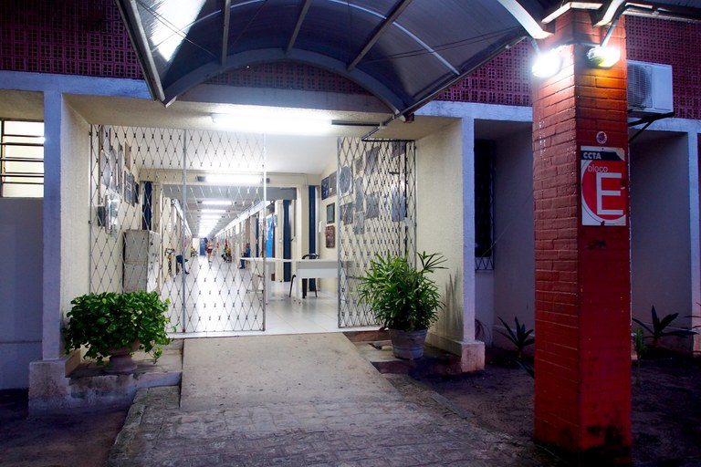
UFPB (Music Department)
UFPB (Music Department)

UNICAMP (Campus)
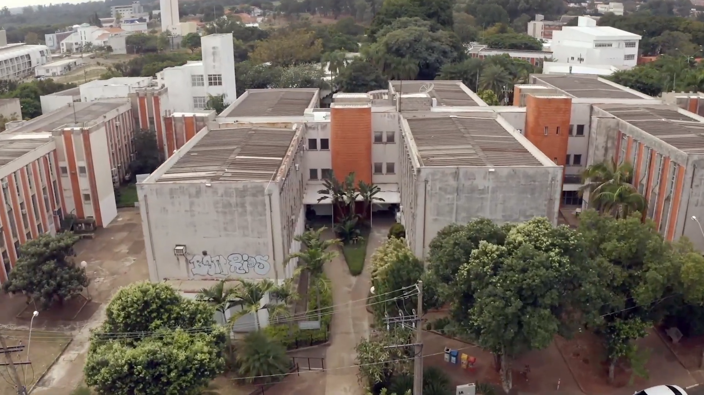
UNICAMP (Instituto de Artes)
UNICAMP (Instituto de Artes)
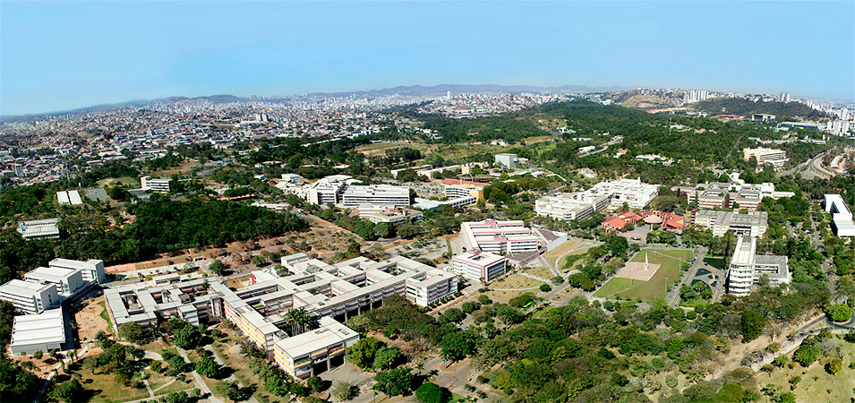
UFMG (Campus Pampulha)
UFMG (Campus Pampulha)

UFMG (Escola de Música)
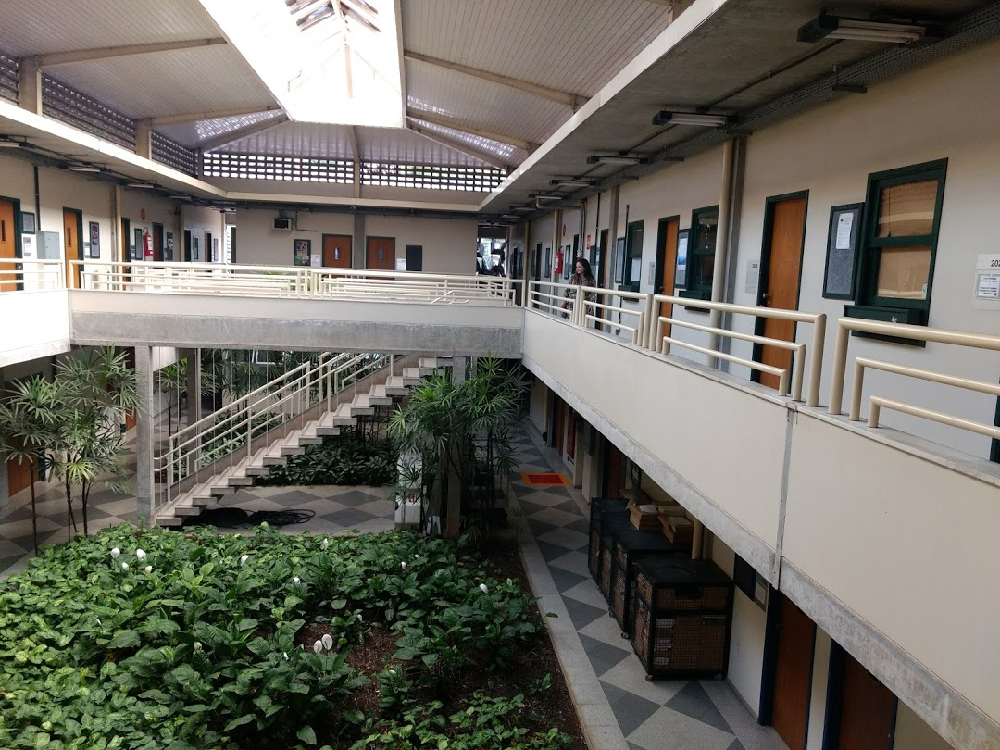
UFMG (faculty offices)
UFMG (faculty offices)
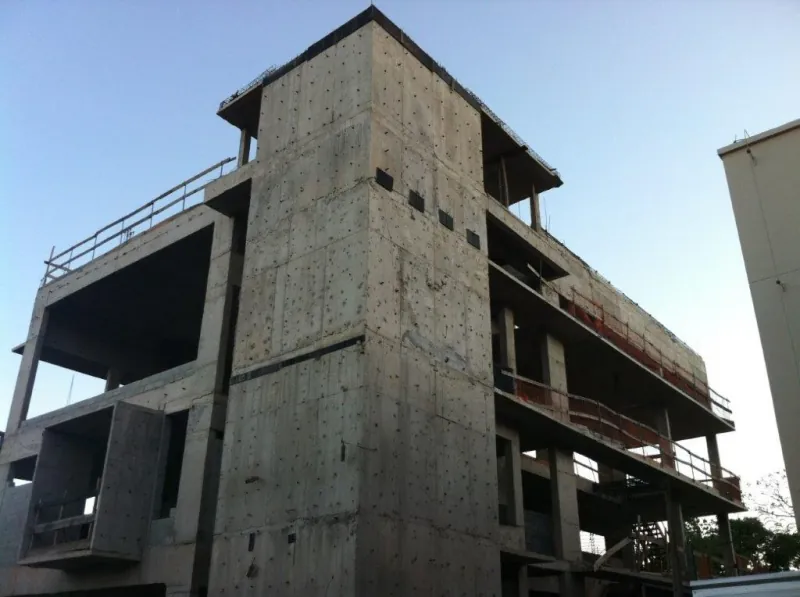
UFMG (unfinished annex)
UFMG (unfinished annex)
- initial interests:
ethnomusicology + composition ...initial reluctance towards music/technology, computer music, etc - composition and 'sonologia'*:
- formal:
instrumental composition, cSound, music analysis, musicology/ethnomusicology, electroacoustic music - informal:
chamber music [Camerata Experimental da Fundação de Educação Artística, amateur instrumental group with friends]
curiosity[books/scores/audios downloaded from a wider 'pirate box', etc]
- something in-between:
studying groups with colleagues and professors to learn Max/MSP or discuss technology in philosophy [which eventually were absorbed in research projects in the university context]
In parallel to my formal education, I became interested in learning things like...
:
- algorithmic tools and languages
[common lisp, common music, C/C++, Python, etc.] - physical computing/DIY controllers/instrument
[Arduino, Basic Stamp, etc.] - interactive music / real-time computer music environments
[Pure Data, SuperCollider, PyO, etc.] - visual and creative coding languages/frameworks
[Processing, openFrameworks, javascript (p5.js, three.js), etc.] - DSP and AI processes/strategies
- machine listening/machine learning tools, concepts, strategies, etc.
so, from a initial feel of cultural/technological déficit...
...but also to the material/institutional conditions to create music with those tools (ensembles, 'updated' instruction on these tools, RIM/studio people/courses, etc.).
...I have moved more and more towards a DIY approach not only towards tools/techniques, but also towards the very conditions of production, presentation, and research in the field of music and sound art.
- How to adapt/develop/apply techniques and tools without reducing them to goods/gadgets or means to achieve an end?
- How to create a non-legitimizing relationship between artistic creation, technical investigation, and critical-conceptual research?
- How to imagine new ways of creating and producing art/music/research in our context, with students, colleagues, artists, researchers, etc.?
- How to foster a cultural 'locus', in our context, for those research/artistic practices that does not emulate ensembles and institutions that we don't have?
- How to deal with the mainstream narratives/theories/discourses about music/sound/technology that are 'imported' in the Global South?
- How to teach techniques, theories, practices, etc?
what I/we have been doing
Courses (non-mandatory; undergrad./grad.; can be taken as electives by students from other programs also)
- 'Atelier' for Composition and Performance in Interactive Music and Art.
- Composing algorithms, programming music: introduction to Python applied to computer-assisted composition.
- Introduction to the techniques and poetics of interactive music and creative computing.
[introductory] - Study, development, and application of real-time audiovisual techniques and processes in interactive
music.
[research project] - Studies in machine listening/learning applied to creative processes and sonology.
[research project] - Python and Processing applied to creative coding in Music and Digital Arts.
[pandemics context]
Group imaginários sonoros
Online festival: musitec2
[pandemics context]
Institutional research projects (funding, etc.)
Integrated research/artistic projects with students and colleagues
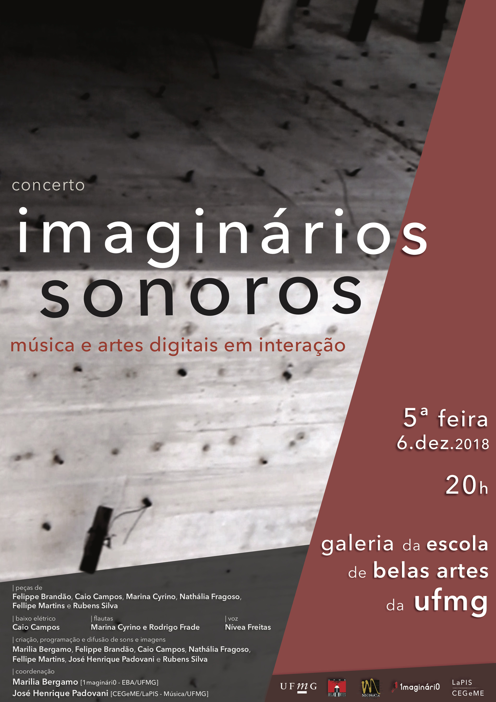
First concert of the imaginários sonorosgroup
(6 dec. 2018)
First concert of the imaginários sonorosgroup
(6 dec. 2018)
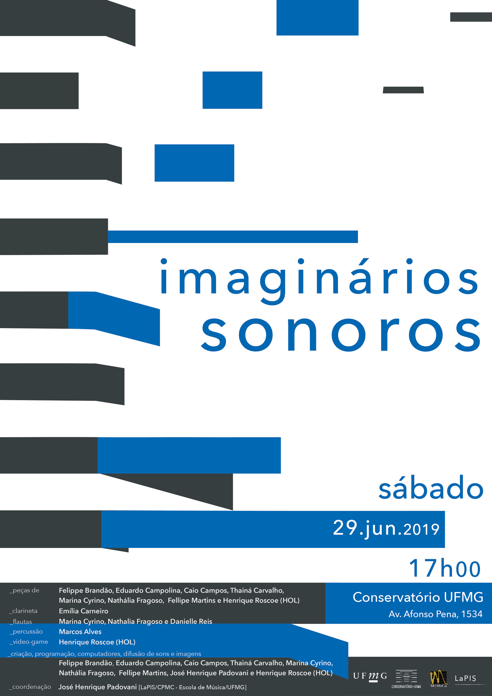
Second concert of the imaginários sonoros group
(29 jun. 2019)
Second concert of the imaginários sonoros group
(29 jun. 2019)
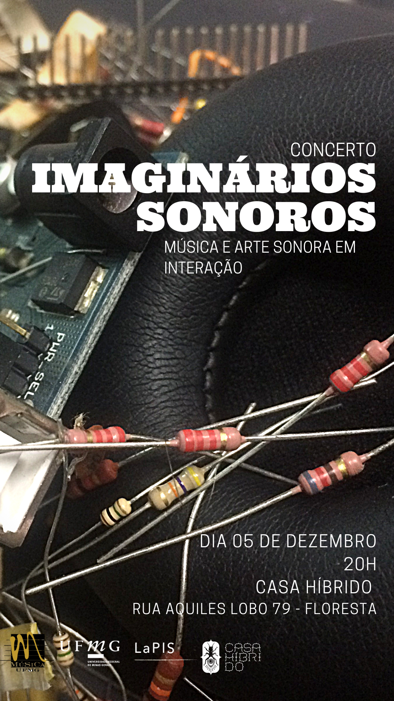
Third concert of the imaginários sonoros group
(5 dec. 2019)
Third concert of the imaginários sonoros group
(5 dec. 2019)
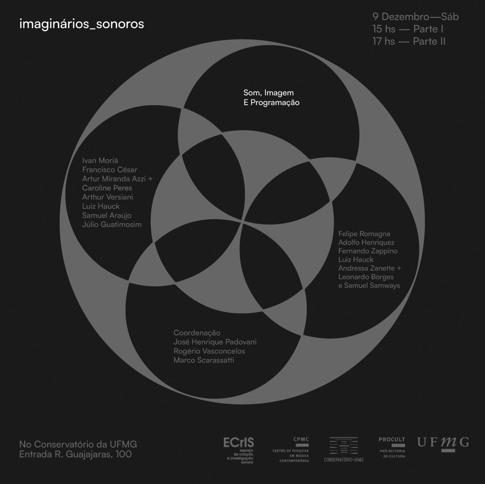
Fourth and fifth concerts of the imaginários sonoros group
(9 dec. 2023)
Fourth and fifth concerts of the imaginários sonoros group
(9 dec. 2023)
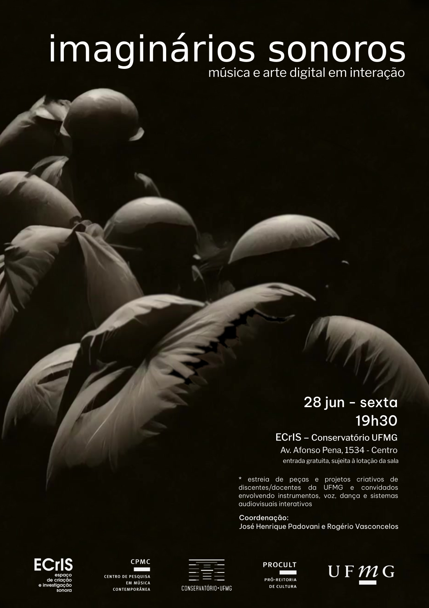
Sixth concert of the imaginários sonoros group
(28 jun. 2024)
Sixth concert of the imaginários sonoros group
(28 jun. 2024)
Research interests:
- 'mechanology' and music/sound practices/studies/arts
Simondon, Yuk-Hui, Sitegler, Benjamin...
- technology as culture, culture as technology;
- pedagogy of invention/creative practices
- technological mediation and the 'new means of transduction'
- human-environment-machines prosthetic interactions
- noodiversity/technosidversity/echodiversity
- critique of the techno-positivist scatologies; AI-ethics
- creative appropriation of technological means of production/transduction
- etc...
- machine listening / machine learning
[critical appropriation of these techniques]
- audiovisual/multimodal interactive music/sound art/digital
Some texts:
#### [mechanology - sound-studies]
- **Música e técnica: reflexão conceitual, mecanologia e criação musical**. Tese de Doutorado em
Música (Processos Criativos)—Campinas: Instituto de Artes da Unicamp, 2013.
- **The solfège of technical objects: notes on the potential contribution of Gilbert Simondon to
sound studies and arts**. Interference, p. 31–45, 2018.
#### [similar, but also talking about some specific works]
- **Escutar com máquinas, compor com pássaros: sobre ‘nós, passarinho’ para flauta e eletrônica
em tempo real**. Música Hodie, v. 24, 18 set. 2024.
- **Pandemics, Delays, and Pure Data: on “afterlives” (2020), for Flute and Live Electronics and
Visuals**. Revista Vórtex, v. 9, n. 2, p. 1–14, 2021.
- **O instrumento imaginário: o paradigma instrumental na criação musical**. Anais do XXVII
Congresso da Associação Nacional de Pesquisa e Pós-Graduação em Música. Anais... Em: XXVII CONGRESSO DA
ASSOCIAÇÃO NACIONAL DE PESQUISA E PÓS-GRADUAÇÃO EM MÚSICA. Campinas: ANPPOM, 1 set. 2017.
- ** Acerca da transdução: princípios técnicos, aspectos teóricos e desdobramentos**. Em: ANAIS DO XXIV
CONGRESSO DA ASSOCIAÇÃO NACIONAL DE PESQUISA E PÓS-GRADUAÇÃO EM MÚSICA 2014, São Paulo. São Paulo: ANPPOM,
2014. p. 1–9.
#### [about *imaginários sonoros*]
- PADOVANI, José H. et al. **Exploração e apropriação artística de ferramentas multimodais interativas no
contexto dos processos criativos colaborativos do grupo “imaginários sonoros”**. Revista Brasileira de Música,
v. 33, n. 2, p. 619–653, 2021.
#### [on creative practices using new tools / 'music analysis']
- MARTINS, Fellipe Miranda; PADOVANI, José. **Analysis informed by audio features associated with statistical
methods : a case study on “Imago” (2002) by Trevor Wishart**. Em: ANAIS DO 5º ENCONTRO INTERNACIONAL DE TEORIA
E ANÁLISE MUSICAL 2020, Campinas. Anais [...]. . Em: 5º ENCONTRO INTERNACIONAL DE TEORIA E ANÁLISE MUSICAL.
Campinas p. 219–234.
- MARTINS, Fellipe; PADOVANI, José. **Be Brief: Convergences and Possibilities of Live-Coding and
sctweeting**.
Proceedings of the 7th International Conference on Live Coding (ICLC 2023). Em: ICLC 2023. Utrecht:
Zenodo, 19 abr. 2023.
- OLIVEIRA, Vinícius; PADOVANI, José. **Map, Trigger, Score, Procedure: machine-listening paradigms in
live-electronics**. Revista Vórtex, v. 10, n. 1, 30 abr. 2022.
#### [on specific tools / nerd stuff]
- FREIRE, Sergio; PADOVANI, José; COSTA CAMPOS, Caio. **Development of Audio Descriptors Inspired by
Schaefferian Criteria: A Set of Tools for Interactive Exploration of Percussive Sounds**. p. 122–138. DOI:
10.1007/978-3-031-35382-6_11.
- GUATIMOSIM, Júlio; PADOVANI, José; GUATIMOSIM, Carlos. **Concatenative Sound Synthesis as a Technomorphic
Model in Computer-Aided Composition**. Em: PROCEEDINGS OF 18TH BRAZILIAN SYMPOSIUM ON COMPUTER MUSIC 2021,
Recife. Anais [...]. . Em: 18TH BRAZILIAN SYMPOSIUM ON COMPUTER MUSIC. Recife p. 91–97.
- PADOVANI, José Henrique; MANZOLLI, Jônatas. **Symbolic regression as a computer-aided music tool for
analysis and composition**. Em: PROCEEDINGS OF THE 15TH BRAZILIAN SYMPOSIUM ON COMPUTER MUSIC 2015, Campinas.
Anais [...]. . Em: BRAZILIAN SYMPOSIUM ON COMPUTER MUSIC. Campinas p. 1–11.
- PADOVANI, J. H. **Spectral envelope extraction by means of cepstrum analysis and filtering in Pure Data**.
Proceedings of the 3rd International Convention for Puredata. São Paulo: 2009.